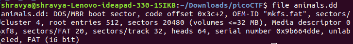

Challenge: Can you unzip this file and retrieve the flag for me?
Hints: Make sure you submit the flag as picoCTF{XXXXX}
Solution: (Download the file from the given link before you proceed ahead!).
Let's try and unzip the file to know what lies inside.
To unzip the file:
a) Go to the location of the file where it is downloaded and righ click on it to find the 'unzip' option. Click on it to unzip.
b) Open terminal and type in the following commands -
(i) unzip flag.zip //to unzip and extract contents of the file;
(ii) eog flag.jpg //if the flag is of .jpg format. You will come to know about the image type once you etract the files.
Flag: picoCTF{Welcome_to_forensics}
Challenge: Hmm for some reason I can't open this PNG? Any ideas?
Hints:
How do operating systems know what kind of file it is? (It's not just the ending!)
Make sure to submit the flag as picoCTF{XXXXX}
Solution: (Download the file from the given link before you proceed ahead!).
Okay, since the file doesn't open and gives us an error, we will have to do the following steps. Also do look at the hints which are quite helpful.
The easiest way to solve this would be to just change the ".png" extension to ".jpeg" or a ".jpg" . In order to understand why we did that, we can look into something called the magic numbers and their list of file signatures.
Use the command 'hexedit flag.png' and identify that the first 4 hex numbers are "FF D8 FF E0", which are actually the magic magic numbers of a ".jpeg" or a ".jpg" file .
Flag: picoCTF{extensions_are_a_lie}
Challenge: Our network administrator is having some trouble handling the tickets for all of of our incidents. Can you help him out by answering all the questions? Connect with "nc 2018shell.picoctf.com 63299" (If your port is different connect with that!).incidents.json
Hints: If you need to code, python has some good libraries for it.
Solution:
Let's first take a look into the file given to us. We can either open the "incidents.json" file in a text editor or simply to look into its contents, type in the command 'cat incidents.json'.
As we look into the file, we can see that a "tickets" function is defined and inside it are a set of 10 tickets (from 0-9). We can also see that the source and destination address information for each ticket is given to us.
Let's go ahead and arrange those data in a table so it would be easier for us to differentiate.table
Now let's go ahead and connect with "nc 2018shell.picoctf.com 63299".
The answers of the first two questions can be easily found in the table, whereas for the third question, we will have to divide the number of unique destination ip addresses (10 in our case) with the total number of files availale with us (i.e 9).
Hence, in short, the answer to the third question woud be 10/9 = 1.11 (rounded to 2 decimal places)
Flag: picoCTF{J4y_s0n_d3rUUUULo_23fa6fa6}
Challenge: Stego-Saurus hid a message for you in this image, can you retreive it?
Hints: Maybe you can find an online decoder?
Solution: Let's go ahead look for websites which can be used to decode information from the image.
Here are some of them: website 1
Upload the file in the decode page and get your flag!!
Flag: picoCTF{r34d1ng_b37w33n_7h3_by73s}
Challenge: There used to be a bunch of animalshere, what did Dr. Xernon do to them?
Hints: Some files have been deleted from the disk image, but are they really gone?
Solution: Okay! So first things first, let's go ahead and download the file from the link given. Since we are not sure what type of file it is, as far as we know its not an image file, therefore let's run the "file" command in terminal to check out what it actually is.
To do that type in "file animals.dd". It shows something like this:

The important thing to notice here is "DOS/MBR". Which means parts of the file can still be opened.
Let's look at the hint given to us. It says, some files have been deleted from the disk image. So to check if they are really gone let's try run the command "foremost animals.dd". If this gives an error run the command "foremost -T animals.dd".
So yeah once done, type in "ls" to check out all the files that are now present in that directory. You can see an additional "output" file.
Type in "cd output" to go to that directory. Once done type "ls" to check out all the other files present in that directory. (You will find a ".txt" file and a "jpg".
Navigate to the jpg folder using the "cd" command. Type in "ls" to check out what other files are present. You can checkout each of them using "eog filename" command. This will help you open up your images one by one and so can you get your flag.
Flag: picoCTF{th3_5n4p_happ3n3d}
Challenge: We captured some traffic logging into the admin panel, can you find the password?
Hints: Tools like wireshark are pretty good for analyzing pcap files.
Solution: So yeah as the hint says, we shall try and install wireshark since it seems to be a great tool for pcap files analyzing. before that let's know what a pcap file is. You can refer this link. But in short a pcap file is a data file created using the program and they contain the packet data of a network. They are mainly associated with Wireshark, a program used for analyzing pcap files. In order to install it, you can go through this link. It has all the steps you need to do in order to get it. It's for Ubuntu, if you are using Windows, go through this link.
Okay! So once downloaded, try opening the pcap file in wireshark, look though each IP address to find the flag which can be seen the right column of the below given hex code.
Flag: picoCTF{n0ts3cur3_1359 7b43}
Challenge: This cat has a secret to teach you. You can find the file in /problems/hex-editor_2_c1a99aee8d919f6e42697662d798f0ff on the shell server.
Hints:
What is a hex editor?
Maybe google knows.
bvi
Solution: This challenge is a pretty simple one. As we had dealt with a hex editor in one of the problems above, we can do the same here. So let's dive right in and type "hexedit hex_editor.jpg". This will prop up the entire hex code of the ".jpg" file.
One can easily scroll down to find the flag.
Flag: picoCTF{and_thats_how_u_edit_hex_kittos_22C1d865}
Challenge: Can you help us find the flag in this Meta-Material? You can also find the file in /problems/truly-an-artist_2_61a3ed7216130ab1c2b2872eeda81348.
Hints:
Try looking beyond the image.
Who created this?
Solution: I'm not sure about the real solution to this problem, but this is how I did it. So there is this command called "strings" which gives a list of all the sensible words/ sentences present inside a file and if you run the grep (i.e the search) command along with it using a pipe, you will get your exact flag.
So just go ahead and type in "strings 2018.png | grep 'picoCTF' " in the terminal and you will get your flag.
Flag: picoCTF{look_in_image_7e31505f}
Challenge: We heard that there is something hidden in this picture. Can you find it?
Hints:
There is an old saying: if you want to hide the treasure, put it in plain sight. Then no one will see it.
Is it really all one shade of red?
Solution: For this problem, the hints were very helpful to me when I solved it. From the hints we come to know that the flag is hidden in plain sight and that it's not an entire shade of red. I looked for tools online which could change the colour of the image and here you go I found some which helped me solve the challenge. link. Go ahead and open the image and change the colour to a shade other than red to obtain the flag.
Flag: picoCTF{n0w_y0u_533_m3}
Challenge: Say my name, say my name.
Hints: If you visited a website at an IP address, how does it know the name of the domain?
Solution: If we go ahead and download the file, we can see that it's a pcap file. Which means we will have to use Wireshark for analyzing it. The hint given to us is very helpful, however if u just search through the IP addresses, I guess, at the 55th IP address, we may get the flag. However it may not be the same in everyone's case!
Flag: picoCTF{ w4lt3r _wh1t3_d4946f512 5fc31cfb62150b6 e2aebe7}
{kind=link}
{kind=link}
{kind=link}
{kind=link}
{kind=link}